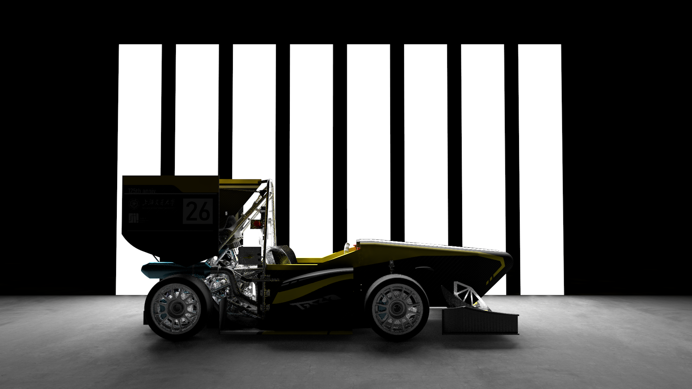

Founded in 2005 and reorganized in 2011, the Shanghai Jiao Tong University Racing Team is the first student Formula One team in China. Relying on the academic advantages of Shanghai Jiao Tong University, the university is committed to building a team with rigorous engineering and innovative research. Shanghai Jiao Tong University Racing Team has been adhering to the school's mission of thinking about the source of drinking water, patriotism and honor the school.
As for racing car, a product with many aspects and high precision requirements, they have cultivated the comprehensive quality of each student in the process of designing and manufacturing independently. The students who have gone out here have accumulated rich experience and become "little experts" in their fields. Countless outstanding graduates have gone on to become, or are becoming, the pillars and pioneers of innovation in their fields. Jiaotong University Racing Team not only provides students with a hands-on engineering platform, but also provides students with an opportunity to communicate with enterprises. At present, the team has established long-term good cooperative relations with many well-known enterprises at home and abroad. This year is the 10th year of the Shanghai Jiao Tong University Racing Team. Looking back, we have started from scratch, grown up and stepped on the right track gradually. We have experienced a lot and gained a lot from it. This is the first decade, and there will be many more to come. In this era of both opportunities and challenges, there would be boundless potential of the team!